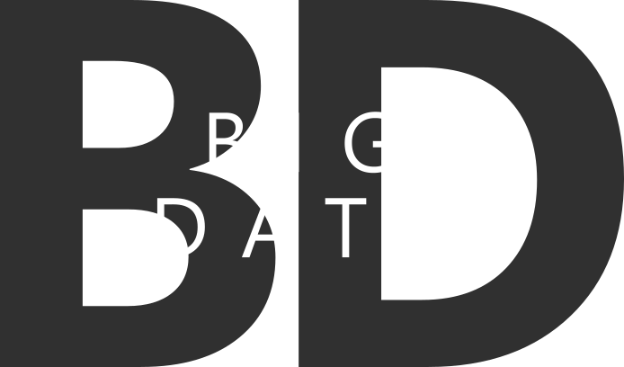

Big data adalah istilah yang menggambarkan volume besar data – baik terstruktur maupun tidak terstruktur – yang membanjiri bisnis sehari-hari. Namun bukan jumlah data yang penting. Apa yang dilakukan organisasi dengan data itulah yang penting. Big data dapat dianalisis demi pemahaman yang mengarah kepada keputusan dan gerakan bisnis strategis yang lebih baik.
Istilah "big data" mengacu pada data yang sangat besar, cepat, atau kompleks sehingga sulit atau tidak mungkin untuk diproses menggunakan metode tradisional. Tindakan mengakses dan menyimpan sejumlah besar informasi untuk analitik sudah ada sejak lama. Tetapi konsep big data mendapatkan momentum di awal 2000-an ketika analis industri Doug Laney mengartikulasikan definisi big data yang sekarang-mainstream sebagai tiga V:
Volume : Organisasi mengumpulkan data dari berbagai sumber, termasuk transaksi bisnis, perangkat pintar (IoT), peralatan industri, video, media sosial dan banyak lagi. Di masa lalu, menyimpannya akan menjadi masalah - tetapi penyimpanan yang lebih murah pada platform seperti danau data dan Hadoop telah meringankan beban.
Velocity : Dengan pertumbuhan Internet of Things, data mengalir ke bisnis dengan kecepatan yang belum pernah terjadi sebelumnya dan harus ditangani tepat waktu. Tag RFID, sensor, dan smart meter mendorong kebutuhan untuk menangani torrent data ini dalam waktu yang hampir bersamaan.
Varietas : Data hadir dalam semua jenis format - dari terstruktur, data numerik dalam database tradisional hingga dokumen teks, email, video, audio, data ticker saham, dan transaksi keuangan yang tidak terstruktur.
Contoh big data termasuk indeks pencarian Google, database profil pengguna Facebook, dan daftar produk Amazon.com. Kumpulan data ini (atau “datasets“) sangat besar sehingga data tidak dapat disimpan dalam database biasa, atau bahkan komputer tunggal.
Awalnya Big Data adalah sebuah sistem teknologi yang diperkenalkan untuk menanggulangi ‘ledakan informasi’ seiring dengan semakin bertumbuhnya ekosistem pengguna perangkat mobile dan data internet.
Facebook juga menerapkan sistem database sejenis untuk menangani melonjaknya pengguna layanan mereka. Dengan teknologi Big Data, media sosial milik Mar Zuckerberg ini tak pernah kesulitan untuk menangani peredaran data yang melonjak drastis yang berasal dari satu miliar penggunanya.